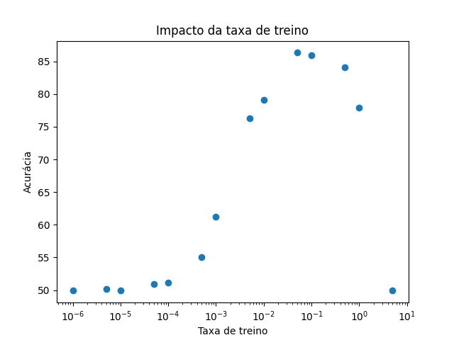
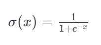
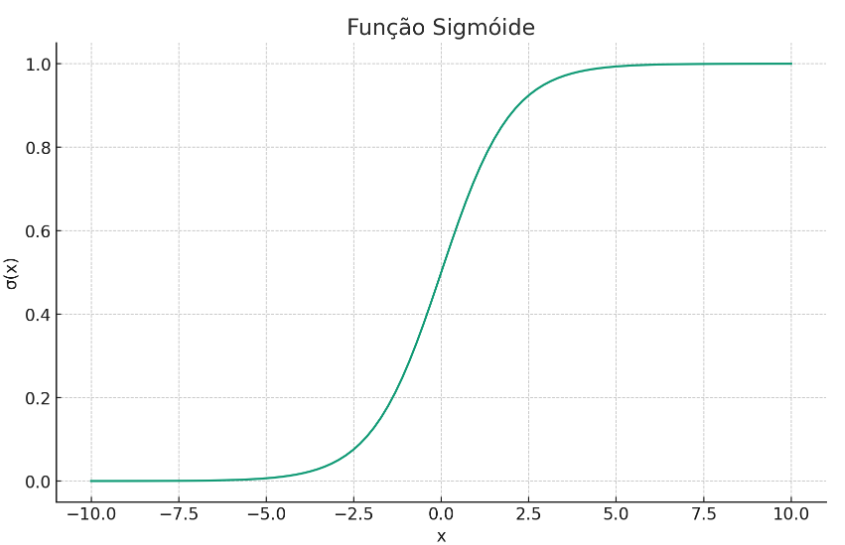
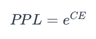

Elton Cardoso do Nascimento 233840
IA024 - Redes Neurais Profundas para Processamento de Linguagem Natural - 1s2024
Na célula de calcular o vocabulário, aproveite o laço sobre IMDB de treinamento e utilize um segundo contador para calcular o número de amostras positivas e amostras negativas. Calcule também o comprimento médio do texto em número de palavras dos textos das amostras.
Respostas:
# limit the vocabulary size to 20000 most frequent tokens
vocab_size = 20000
counter = Counter()
counterTarget = Counter() # NEW: counter for target
meanN_Word = 0 # NEW: mean words in a sentence
for (target, line) in list(IMDB(split='train')):
words = line.split() # NEW: avoid duplication
counter.update(words) # CHANGED: use words variable
# NEW: Update target counter
if target == 1:
counterTarget.update("-")
else:
counterTarget.update("+")
meanN_Word += len(words) # NEW: add the sentence lenght
nTrain = len(list(IMDB(split='train'))) # NEW: store size of train dataset
meanN_Word /= nTrain # NEW: compute mean words per sentence
# create a vocabulary of the 20000 most frequent tokens
most_frequent_words = sorted(counter, key=counter.get, reverse=True)[:vocab_size]
vocab = {word: i for i, word in enumerate(most_frequent_words, 1)}
vocab_size = len(vocab)
# NEW: print required results
print("Amostras positivas:", counterTarget["+"])
print("Amostras negativas:", counterTarget["-"])
print("Total de amostras:", nTrain)
print("Comprimento médio:", meanN_Word, "palavras")
Amostras positivas: 12500
Amostras negativas: 12500
Total de amostras: 25000
Comprimento médio: 233.7872 palavras
As linhas 9 e 10 da célula do vocabulário são linhas típicas de programação python em listas com dicionários com laços na forma compreensão de listas ou list comprehension em inglês. Procure analisar e estudar profundamente o uso de lista e dicionário do python. Estude também a função encode_sentence.
Mostre as cinco palavras mais frequentes do vocabulário e as cinco palavras menos frequentes. Qual é o código do token que está sendo utilizado quando a palavra não está no vocabulário? Calcule quantos tokens das frases do conjunto de treinamento que não estão no vocabulário.
Respostas:
5 palavras mais frequentes: ['the', 'a', 'and', 'of', 'to']
5 palavras menos frequentes: ['age-old', 'place!', 'Bros', 'tossing', 'nation,']
Código:
print("5 palavras mais frequentes:", most_frequent_words[:5])
print("5 palavras menos frequentes:", most_frequent_words[-5:])
Na linha
return [vocab.get(word, 0) for word in sentence.split()] # 0 for OOV
O método get(word, 0) retornará "0" caso a palavra contida em word não esteja no vocabulário, visto que o valor padrão caso o elemento não esteja no dicionário foi definido para "0" (segundo parâmetro do método). Sendo "0" então o código para um token desconhecido.
Total de tokens desconhecidos: 566141
Código utilizado:
def count_unknown(sentence):
n_unknown = 0
encoded_sentence = encode_sentence(sentence, vocab)
for encoded_word in encoded_sentence:
if encoded_word == 0:
n_unknown += 1
return n_unknown
total_unknown = 0
for (target, line) in list(IMDB(split='train')):
encode_sentence(line, vocab)
total_unknown += count_unknown(line)
print("Total de tokens desconhecidos:", total_unknown)
Reduzindo o número de amostras para 200
Uma forma simples de reduzir o número de amostras é utilizar o fatiamento de listas para selecionar apenas as primeiras 200 amostras utilizando [:200] na lista do IMDB: list(IMDB(split='train'))[:200]. Faça isto, tanto na linha 5 da célula de calcular o vocabulário como na linha 5 da célula do "II - Dataset". Com estas duas modificações, execute o notebook por completo novamente. Você verá que o tempo de processamento cairá drasticamente, para aproximadamente 1 a 2 segundos por época. Porém você vai notar que a Acurácia calculada na célula VI - Avaliação sobe para 100% ou próximo disso. Consegue justificar a razão deste resultado inesperado, entendendo que no treinamento, as perdas em cada época continuam próximas de valores com todo o dataset? Para ver a resposta, verifique agora no dataset com 200 amostras, quantas são as amostras positivas e quantas são as amostras negativas no dataset de teste.
Respostas:
Analisando a nova distribuição de amostras:
é possível observar que o subconjunto de amostras de treino selecionado é enviesado, o modelo precisa apenas aprender a predizer "negativo" na saída, simplificando ao extremo a função que precisa ser aprendida.
Com o novo código para selecionar o subconjunto:
trainDataset = []
counterTarget = Counter()
nTrain = 0
for (target, line) in list(IMDB(split='train')):
if target == 1 and counterTarget["-"] < 100:
trainDataset.append((target, line))
counterTarget.update("-")
nTrain += 1
elif target == 2 and counterTarget["+"] < 100:
trainDataset.append((target, line))
counterTarget.update("+")
nTrain += 1
if nTrain == 200:
break
Temos que o resultado se torna não enviesado:
Amostras positivas: 100
Amostras negativas: 100
Total de amostras: 200
Comprimento médio: 230.735 palavras
E a acurácia volta a obter um valor próximo do original (51,744%):
Test Accuracy: 49.0%
Precisamos entender como funciona a classe IMDBDataset. Ela é a classe responsável para acessar cada amostra do dataset.
Em primeiro lugar precisamos entender qual será a entrada da rede neural para decidir se o texto é uma crítica positiva ou negativa. Uma das formas mais simples de construir um modelo preditivo é com base nas palavras utilizadas no texto. A distribuição das palavras de um texto tem alta correlação com o fato do texto estar falando bem ou falando mal de um filme. Certamente é estimativa que possui seus erros, mas é a forma mais simples e eficiente de se fazer uma análise de sentimento ou de maneira geral uma classificação de um texto. Esse método é denominado "Bag of Words". A entrada da rede neural, para cada amostra, será um vetor de comprimento do vocabulário, com valores todos zero, com exceção dos tokens que aparecem no texto da amostra. Esse método de codificação é também denominado "One-Hot". Estude o código da classe IMDBDataset fazendo experimentos e perguntas ao chatGPT para entender com profundidade esta classe.
O dataset criado na linha 24 possui um total de:
Código utilizado:
def print_info(dataset):
counterTarget = Counter()
meanN_Word = 0
nSentence = len(dataset)
for i in range(nSentence):
encoding, target = dataset[i]
if target == 0:
counterTarget.update("-")
else:
counterTarget.update("+")
meanN_Word += int(encoding.sum())
meanN_Word /= nSentence
print("Amostras positivas:", counterTarget["+"])
print("Amostras negativas:", counterTarget["-"])
print("Total de amostras:", nSentence)
print("Média de palavras codificadas:", meanN_Word, "palavras")
print("TREINO")
print_info(train_data)
O número médio de palavras codificadas é 150.865, menor que o número médio de palavras por sentença, 230.735.
Essa diferença é devido ao fato de que, se uma palavra aparecer várias vezes no texto, o primeiro método irá contar cada aparição, enquanto que olhar o tamanho médio do vetor one-hot considera apenas 1 aparição de cada palavra.
A rede neural será alimentada pelo vetor one-hot (quais suas dimensões) e fará uma predição da probabilidade do texto associado ao one-hot ser uma mensagem positiva.
Aumentando a eficiência do treinamento com o uso da GPU T4
O código do notebook está preparado para executar tanto com ambiente usando CPU como com GPU, entretanto o ganho de velocidade está sendo reduzido de 45 segundos para 29 segundos que é um ganho muito aquém do esperado que seria ter um speedup entre 7 e 11 vezes dependendo da aplicação. Vamos entender a razão desta baixa eficiência e corrigir o problema.
A GPU é utilizada durante o treinamento do modelo, onde é utilizada a técnica de minimização da Loss utilizando o gradiente descendente. Isso ocorre na segunda célula do "V - Laço de Treinamento". Iremos analisar os detalhes mais à frente, para por enquanto basta entender onde a GPU é utilizada. A linha 17 é onde o modelo está fazendo a predição (passo forward), dado a entrada, calcula a saída da rede (muitas vezes chamado de logito) e o cálculo da loss está sendo feito na linha seguinte e o cálculo do gradiente ocorre na linha 21 e a linha 22 é onde ocorre o ajuste dos parâmetros (weights) da rede neural fazendo ela minimizar a Loss. Esse é o processo que é mais demorado e onde a GPU tem muitos ganhos, pois envolve praticamente apenas multiplicação de matrizes. Existem apenas 3 linhas que controlam o uso da GPU que servem para colocar o modelo, a entrada e a saída esperada (targets) na GPU: linhas 3, 14 e 15, respectivamente.
Com a o notebook configurado para GPU T4, meça o tempo de dois laços dentro do for da linha 13 (coloque um break após dois laços) e determine quanto demora demora para o passo de forward (linhas 14 a 18), para o backward (linhas 20, 21 e 22) e o tempo total de um laço. Faça as contas e identifique o trecho que é mais demorado.
| Momento | Tempo |
|---|---|
| Tempo do laço: | 128.39257717132568 ms |
| Tempo do forward: | 1.8529891967773438 ms |
| Tempo do backward: | 1.2031793594360352 ms |
(o tempo indicado é a média das duas execuções solicitadas)
Conclusão: A demora principal está na execução da linha: 13 = for inputs, targets in train_loader:. Isso pode ser ainda mais explicitado calculando o tempo médio que demora para executá-la, 125.31495094299316 ms, que é praticamente o tempo inteiro do laço.
O trecho que precisa ser otimizado é o método __getitem__ da classe IMDBDataset, visto que relizar o encoding de cada amostra sempre que é utilizada é custoso e está gerando o aumento no tempo.
Uma solução simples para acelerar o código é realizar um cacheamento dos dados: todos os encodings são calculados anteriormente, e todos os targets são convertidos para tensores, e durante o treino é realizado apenas um acesso:
class IMDBDataset(Dataset):
def __init__(self, split, vocab):
self.data = list(IMDB(split=split))
self.vocab = vocab
#####################
##HERE
#####################
# Cache data encoding and target
self.itens = []
for idx in range(len(self.data)):
target, line = self.data[idx]
target = 1 if target == 1 else 0
# one-hot encoding
X = torch.zeros(len(self.vocab) + 1)
for word in encode_sentence(line, self.vocab):
X[word] = 1
self.itens.append((X, torch.tensor(target)))
def __len__(self):
return len(self.data)
def __getitem__(self, idx):
#####################
##AND HERE
#####################
#Only retrieves data
return self.itens[idx]
Essa alteração diminui os tempo do laço de treino, gerando um speedup de ~20x:
| Momento | Tempo anterior (ms) | Novo tempo (ms) | Speedup |
|---|---|---|---|
| Tempo do laço: | 128.39257717132568 | 6.272673606872559 | 20.468556985119445 |
| Tempo do forward: | 1.8529891967773438 | 1.9022226333618164 | ~ 1 |
| Tempo do backward: | 1.2031793594360352 | 1.0069608688354492 | ~ 1 |
| Tempo de acessar o dado: | 125.31495094299316 | 3.3473968505859375 | 37.43653846153846 |
Como um dado é acessado várias vezes durante todo o processo de treino, isso irá gerar uma melhora na performance global (não apenas uma melhora no processo de treino, o que aconteceria se ele fosse acessado apenas 1 vez).
Para um dataset maior, é possível também paralelizar o cálculo dos encodings, que é custoso, visto que o tempo para criar o objeto do dataset aumentou para 26.34220790863037 s.
Após esta otimização, é esperado que o tempo de processamento de cada época caia tanto para execução em CPU (da ordem de 10 segundos por época) como para GPU T4 (da ordem de 1 a 2 segundos por época). Isso utilizando as 25 mil amostras do dataset IMDB inteiro.
Atenção: Se não conseguir atingir esse objetivo, procure árduamente entender com maiores detalhes o código. Esse exercício é fundamental para poder acompanhar o curso durante o semestre.
Agora que a execução está bem mais otimizada em tempos de execução, modifique o início do notebook para ter novamente o dataset completo: 25 mil amostras e vamos analisar um outro fator importante que é a escolha do LR (Learning Rate)
Escolhendo um bom valor de LR
Faça a melhor escolha do LR, analisando o valor da acurácia no conjunto de teste, utilizando para cada valor de LR, a acurácia obtida. Faça um gráfico de Acurácia vs LR e escolha o LR que forneça a maior acurácia possível. Atenção, mantenha o número de épocas como 5.
Calculando a acurácia média em 5 treinos variando a taxa de treino, temos que a acurácia varia da seguinte forma:

Observando os valores obtidos, temos que a acurácia é máxima para LR = 0.05
A equação do gradiente descendente é:
$$ \vec{\theta}_{i+1} = \vec{\theta}i - \text{LR} \nabla \vec{f}(\vec{\theta}{i}) $$
em que:
Pela equação, conseguimos perceber que a taxa de treino $\text{LR}$ tem como papel indicar a intensidade de cada atualização nos pesos. Ou seja, uma vez calcula a direção para a qual os pesos devem ser atualizados ($\nabla \vec{f}(\vec{\theta}_{i})$), ela indica o quanto eles devem ser levados nessa direção.
Uma taxa muito baixa ocasiona em um treino lento, em que os pesos demoram muitas iterações para serem atualizados. Já uma taxa muita alta gera instabilidade, podendo fazer o processo de treino divergir.
Otimizando o tokenizador
Agora que a convergência da Loss está melhor, vamos experimentar os parâmetros do tokenizador, isto é, como as palavras estão codificadas em tokens. Observe novamente o vocab criado na parte I - Vocabulário e Tokenização. Perceba como as pontuações estão influenciando nos tokens criados e como o uso de letras maiúsculas e minúsculas também podem atrapalhar a consistência dos tokenizador em representar o significado semântico das palavras. Experimente rodar o encode_sentence com frases que tenham pontuações e letras maiúsculas e minúsculas. Baseado nessas informações, procure melhorar a forma de tokenizar o dataset.
Melhores a forma de tokenizar, isto é, pré-processar o dataset de modo que a codificação seja indiferente das palavras serem escritas com maiúsculas ou minúsculas e sejam pouco influenciadas pelas pontuações.
Nova função para limpar as amostras:
def clean_text(text:str) -> str:
text = text.lower()
for punctuation in string.punctuation:
text = text.replace(punctuation, "")
return text
Alterado a geração do vocabulario para limpar as amostras:
# limit the vocabulary size to 20000 most frequent tokens
vocab_size = 20000
counter = Counter()
for (target, line) in list(IMDB(split='train')):
#AQUI↓################################
line = clean_text(line)
#AQUI↑################################
counter.update(line.split())
# create a vocabulary of the 20000 most frequent tokens
most_frequent_words = sorted(counter, key=counter.get, reverse=True)[:vocab_size]
vocab = {word: i for i, word in enumerate(most_frequent_words, 1)}
vocab_size = len(vocab)
Alterado a codificação de sentenças para limpar o texto:
def encode_sentence(sentence, vocab):
#AQUI↓################################
sentence = clean_text(sentence)
#AQUI↑################################
return [vocab.get(word, 0) for word in sentence.split()] # 0 for OOV
Não foram realizadas alterações na seção II.
Temos uma redução de 75% dos tokens desconhecidos, de 566141 para 137292.
A nova acurácia média (5 treinos) é de 88.07%, indicando que houve uma pequena melhoria em relação à acurácia anterior de 86.32%
Vamos estudar agora o Data Loader da seção III do notebook. Em primeiro lugar anote a acurácia do notebook com as melhorias de eficiência de rodar em GPU, com ajustes de LR e do tokenizador. Em seguida mude o parâmetro shuffle na construção do objeto train_loader para False e execute novamente o notebook por completo e meça novamente a acurácia:
| Shuffle | Acurácia |
|---|---|
| True | 88.07% |
| False | 50% |
Estude o método de minimização da Loss pelo gradiente descendente utilizado em redes neurais, utilizando processamento por batches. Esse é um conceito muito importante. Veja no chatGPT qual é a relação da função Loss a ser minimizada no treinamento em função do batch size.
Primeira vantagem é em relação ao custo, já que o uso de batch permite o treino em dataset maiores, requerendo menos memória; e permite atualizar mais frequentemente o modelo, o que pode diminuir o tempo de treino.
A segunda vantagem é na generalização do modelo e treino: com o ruído adicionado utilizando batchs, visto que cada batch diferente gerará uma atualização que irá levar os parâmetros em uma direção diferente no espaço, isso permite o modelo a escapar de mínimos locais, evitando um fim prematuro no treinamento e aumentando a generalização.
Embaralhar os batchs aumenta a robustez do treino e a generalização. Caso não sejam embaralhadas, os batchs podem conter padrões indesejáveis, como uma representação não homogênea das classes ou apenas padrões muito específicos nos dados, que seriam repetidos a toda epoch e que podem levar a rede a se manter presa em uma região do espaço de treinamento ou aprender estes padrões.
Por que o cálculo da acurácia é feito sobre todo o dataset, independente da ordem dos dados. O uso de batchs neste caso apenas diminui os custos computacionais para realizar o cálculo.
Utilizando o seguinte código para calcular as iterações:
i = 0
for inputs, targets in train_loader:
i +=1
print("Iterações:", i)
Temos que são realizadas 196 iterações. Este valor é a quantidade de batchs em que o dataset é dividido, o teto da quantidade de elementos no conjunto de treino dividido pelo tamanho dos batchs:
$$ \lceil {||Treino|| \over \text{batch size}} \rceil $$
O último batch possui 40 amostras, pois o conjunto de treino não é totalmente divisível. É comum que o último batch seja menor que batch_size, e não costuma gerar um problema significativo no processo de treino.
Código:
R = [int(sum(targets))/len(targets) for _, targets in train_loader]
R_mean = np.mean(R)
Como resultado, obtemos que o R médio é 0.4998246173469388 ≈ 0.5. Portanto, o data loader está entregando batches balanceados.
A entrada possui shape [128, 20001] e é do tipo float32. Já a saída/target possui shape [128] e é do tipo int64.
| - | batch_size = 1 | batch_size = 128 | batch_size = 512 |
|---|---|---|---|
| Loss final da época 1 | 0.0208 | 0.4220 | 0.6719 |
| Loss final da época 5 | 0.0000 | 0.2249 | 0.4117 |
Comentários: podemos primeiramente observar que, com um batch menor, a loss se torna cada vez maior. Uma possível explicação para isso é o fato de que o código disponibilizado reporta a loss apenas para o último batch de cada epoch, indicando a performance do modelo apenas neste elemento, não no conjunto total. É possível que a rede tenha se otimizado melhor para os elementos específicos presentes no batch, principalmente para o caso do batch unitário. Pode ser ainda possível que a rede tenha realmente "overfitado" para os elementos no conjunto de treino, devido a inexistência do ruído adicionado com batchs maiores. Uma outra explicação seria uma atualização mais frequente do modelo, treinando mais.
É importante notar que o treino com o batch unitário se mostrou consideravelmente mais lento do que nos outros casos.
A célula da seção IV - Modelo é provavelmente uma das mais difíceis de entender, juntamente com a seção V - Treinamento, pois são onde aparecem as principais funções do PyTorch.
Iremos utilizar uma rede neural de duas camadas ditas MLP (Multi-Layer Perceptron). São duas camadas lineares, fc1 e fc2. Essas camadas também são denominadas fully connected para diferenciar de camadas convolucionais. As camadas são onde estão os parâmetros (weights) da rede neural. É importante estudar como estas camadas lineares funcionam, elas são compostas de neurônios que fazem uma média ponderada pelos parâmetros W_i mais uma constante B_i. Esses parâmetros são treinados para minimizar a função de Loss. Uma função não linear é colocada entre as camadas lineares. No caso, usamos a função ReLU (Rectified Linear Unit).
Para entender o código da célula do Modelo MLP é fundamental conhecer os conceitos de orientação a objetos do Python. O modelo é definido pela classe OneHotMLP e é instanciado no objeto model na linha 16 que implementa o modelo da rede neural, recebendo uma entrada no formato one-hot e retornando o logito para ser posteriormente convertido em probabilidade do frase ser positiva ou negativa. O método forward será chamado automaticamente quando o objeto model for usado como função. Esses modelos são projetados para processar um batch de entrada de cada vez no formato devolvido pelo Data Loader visto na seção III (Exercício III.2.d)
Exercícios para experimentar o modelo
logits = model( inputs). Aplique a função sigmoidal ao logito para convertê-lo numa probabilidade de valor entre 0 e 1.Código:
model = OneHotMLP(vocab_size)
batch = next(iter(train_loader))
(inputs, targets) = batch
logits = model(inputs)
print(torch.sigmoid(logits).squeeze())
Resultado:
tensor([0.4934, 0.5003, 0.4914, 0.4959, 0.4913, 0.4880, 0.4914, 0.4915, 0.4944,
0.4861, 0.4854, 0.4893, 0.4888, 0.4796, 0.4879, 0.4836, 0.4871, 0.4951,
0.4904, 0.4912, 0.4907, 0.4923, 0.4948, 0.4858, 0.4854, 0.4843, 0.4960,
0.4909, 0.4962, 0.4867, 0.4946, 0.4919, 0.4919, 0.4898, 0.4928, 0.4906,
0.4928, 0.4930, 0.4880, 0.4882, 0.4947, 0.4914, 0.4874, 0.4885, 0.4822,
0.4979, 0.4899, 0.4951, 0.4936, 0.4972, 0.4868, 0.4879, 0.4930, 0.4909,
0.4899, 0.4909, 0.4902, 0.4829, 0.4943, 0.4930, 0.4945, 0.4879, 0.4916,
0.4894, 0.4921, 0.4884, 0.4812, 0.4882, 0.4915, 0.4851, 0.4924, 0.4889,
0.4881, 0.4880, 0.4849, 0.4924, 0.4864, 0.4843, 0.4917, 0.4922, 0.4923,
0.4905, 0.4943, 0.4960, 0.4867, 0.4919, 0.4928, 0.4964, 0.4912, 0.4965,
0.4945, 0.4895, 0.4886, 0.4900, 0.4855, 0.4920, 0.4971, 0.4942, 0.4873,
0.4922, 0.4910, 0.4956, 0.4965, 0.4844, 0.4892, 0.4914, 0.4876, 0.4930,
0.4859, 0.4892, 0.4908, 0.4937, 0.4897, 0.4899, 0.4835, 0.4847, 0.4947,
0.4880, 0.4948, 0.4853, 0.4905, 0.4955, 0.4957, 0.4935, 0.4941, 0.4884,
0.4912, 0.4936], grad_fn=<SqueezeBackward0>)
target esperado e verifique se ele acertou. Você pode considerar que se a probabilidade for maior que 0.5, pode-se dar o target 1 e se for menor que 0.5, o target 0. Observe isso que é feito na linha 11 da seção VI - Avaliação. Calcule então a acurácia do modelo treinado no primeiro batch dos dados e mostre o código para calcular essa acurácia do primeiro batch e a acurácia obtida:Acurácia = 92.1875%
Código utilizado:
batch = next(iter(train_loader))
(inputs, targets) = batch
logits = model(inputs)
predicted = torch.round(torch.sigmoid(logits.squeeze()))
total = targets.size(0)
correct = (predicted == targets).sum().item()
print(f'Accuracy: {100 * correct / total}%')
Se você der um print no modelo: print(model), você obterá:
*OneHotMLP( (fc1): Linear(in_features=20001, out_features=200, bias=True) (fc2): Linear(in_features=200, out_features=1, bias=True) (relu): ReLU() )
Os pesos da primeira camada podem ser visualizados com:
model.fc1.weight
e o elemento constante (bias) pode ser visualizado com:
model.fc1.bias
Calcule o número de parâmetros do modelo, preenchendo a seguinte tabela (utilize shape para verificar a estrutura de cada parâmetro do modelo):
| layer | fc1 | fc1 | fc2 | fc2 | Total |
|---|---|---|---|---|---|
| - | weight | bias | weight | bias | - |
| size | 4000200 | 200 | 200 | 1 | 4000601 |
Agora vamos entrar na principal seção do notebook que minimiza a Loss para ajustar os pesos do modelo.
Cálculo da Loss
A Loss é uma comparação entre a saída do modelo e o label (target). A Loss mais utilizada para problemas de classificação é a Entropia Cruzada. A equação da entropia cruzada para o caso binário (2 classes: 0 ou 1; True ou False) é dada por:
Muitas vezes chamamos $y_i$ de target e $\hat{y_i}$ de prob.
Quando a Loss é zero, significa que o modelo está predizendo tanto as amostras positivas como as amostras negativas com probabilidade de 100%. O objetivo é otimizar o modelo para conseguir minimizar a Loss ao máximo.
A rede neural é o nosso modelo que recebe a entrada com um batch de amostras e retorna um batch de logitos.
$$logits = model( inputs)$$
para converter o logito em probabilidade, utiliza-se a função sigmóide que é dada pela equação:

Assim, o código pytorch para estimarmos a probabilidade de um texto codificado no formato one-hot na variável input pode ser:
$$probs = torch.sigmoid(logits)$$
Atenção: observe que esses comandos estão processando todas as amostras no batch, que nesse notebook tem 128 amostras no batch size.
Calculando primeiro a perda para uma amostra de cada classe:
$$ L_0 = 0 \log(0.5) + (1-0)log(1-0.5) = log(0.5) $$
$$ L_1 = 1 \log(0.5) + (1-1)log(1-0.5) = log(0.5) $$
Temos que seria a mesma, logo o somatório poderia ser reduzido:
$$ L_{máx} = -{1 \over N} \sum_{i=1}^N \log(0.5) = -{1\over N} N \log(0.5) = -\log(0.5) $$
O que nos dá uma perda máxima de $L_{máx} = -\log(0.5) = 0.6931...$
(input,target) = next(iter(train_loader)) e calcule o valor da Loss utilizando apenas as operações da equação fornecida anteriormente utilizando o pytorch (operações de soma, subtração, multiplicação, divisão e log). Verifique se este valor é próximo do valor teórico do exercício anterior.O valor obtido é de 0.6939290165901184, coerente com o esperado teoricamente.
Código utilizado:
(input,target) = next(iter(train_loader))
model = OneHotMLP(vocab_size)
output = model(input)
prob = torch.sigmoid(output.squeeze())
L = torch.sum(
(target*torch.log(prob)) +
((1-target)*torch.log(1-prob))
)
L *= -1/(len(target))
print(L.item())
nn.BCELoss (Binary Cross Entropy Loss). Você primeiro deve instanciar uma função da classe nn.BCELoss. Esta função instanciada recebe dois parâmetros (probs , targets) e retorna a Loss. Use a busca do Google para ver a documentação do BCELoss do pytorch. Calcule então a função de Loss da entropia cruzada, porém usando agora a função instanciada pelo BCELoss e confira se o resultado é exatamente o mesmo obtido no exercício anterior.A loss obtida é 0.6896450519561768, coerente com os valores anteriores.
Código utilizado:
(input,target) = next(iter(train_loader))
model = OneHotMLP(vocab_size)
logits = model(input)
predicted = torch.sigmoid(logits.squeeze())
loss = nn.BCELoss()
print(loss(predicted, target.float()).item())
nn.BCEWithLogitsLoss, que é a opção utilizada no notebook. Observe que com essa classe o cálculo da Loss é feito com o logito sem precisar calcular a probabilidade. O resultado da Loss deve igualar aos resultados anteriores.A loss obtida desta vez é 0.6946419477462769, mais uma vez coerente.
Código utilizado:
(input,target) = next(iter(train_loader))
model = OneHotMLP(vocab_size)
logits = model(input)
loss = nn.BCEWithLogitsLoss()
print(loss(logits.squeeze(), target.float()).item())
Minimização da Loss pelo gradiente descendente
Estude o método do gradiente descendente para minimizar uma função. Como curiosidade, pergunte ao chatGPT quando este método de minimização foi usado pela primeira vez. Aproveite e peça para ele explicar o método de uma maneira bem simples e ilustrativa. Peça para ele explicar qual é a forma moderna de se calcular computacionalmente o gradiente de uma função. Finalmente peça para ele explicar as linhas 3, 6, e (20, 21 e 22) do laço de treinamento.
Atenção: Mantenha esse código da impressão do valor da Loss inicial, antes do treinamento, nesta célula, pois ela é sempre útil para verificar se não tem nada errado, antes de começar o treinamento.
Atenção: A Loss antes da época 0 deve ser calculada em todas as 25.000 amostras.
| Momento | Loss |
|---|---|
| Loss antes da época 0 | 0.6924 |
| Loss após época 0 | 0.4612 |
| Loss após época 5 | 0.2079 |
Para começar novamente o treino com o modelo aleatório a forma mais simples é instanciar novamente ele, para isso sendo necessário executar a célula da seção "IV-Modelo", mais especificamente a linha model = OneHotMLP(vocab_size).
Observe que o módulo de avaliação utiliza o test_loader que foi carregado do dataset IMDB especialmente preparado para fazer a avaliação.
O dataset de teste possui 25000 amostras.
Código:
len(test_data)
model.eval() e with torch.no_grad().model.eval() é utilizado no momento de inferência (não treino) do modelo, pois algumas camadas possuem comportamento diferentes durante o treino. No caso este modelo provavelmente não terá um comportamento diferente com ou sem este comando, porém é uma boa prática sempre utilizá-lo.
with torch.no_grad() indica que não é necessário calcular os gradientes das operações realizadas dentro deste contexto, acelerando as operações e diminuindo o uso de memória.
Como se deseja apenas saber se o valor é maior ou menor que 0, é possível simplificar a linha para:
(logits.squeeze() > 0).float()
reduzindo o tempo da operação de 29.7 µs ± 7.71 µs para 23.2 µs ± 527 ns. Caso os dados posteriormente não precisem ser convertidos para float sendo apenas:
logits.squeeze() > 0
a redução é ainda maior, para 14.3 µs ± 2.11 µs.
Utilizando o código:
inputs = inputs.to(device)
targets = targets.to(device)
logits = model(inputs)
predicted = torch.round(torch.sigmoid(logits.squeeze()))
predicted2 = (logits.squeeze() > 0).float()
equal = (predicted != predicted2).sum() == 0
equal = equal.item()
print("É igual?", equal)
Saída: "É igual? True"
podemos confirmar que ambos os códigos geram resultados equivalentes.
Perplexidade como métrica de avaliação
Em teoria da informação, a perplexidade (PPL) é dada por

onde $CE$ é a Cross Entropy, que utilizamos na Loss do treinamento. A base $e$ utilizada para a exponenciação deve ser compatível com a base utilizado no logaritmo da cross entropia. Como utilizamos logaritmo natural para a entropia cruzada, devemos aqui usar o e. Se a entropia cruzada usasse a base 2, a perplexidade seria 2 elevado à entropia cruzada.
Eu, particularmente gosto de usar a perplexidade em vez de usar a entropia cruzada pelo motivo que ficará explícito nos exercícios a seguir:
$$ \text{PPL} = e^{ 0.6931} = 2 $$
A perplexidade tem valor teórico de 0.5.
Analisando numericamente o comportamento da perda para o caso de N classes:
loss = nn.CrossEntropyLoss()
N_hist = list(range(1, 10))
ppl_hist = []
for N in N_hist:
output = torch.ones(N, dtype=torch.float)
#Simétrico+média -> apenas 1 classe é necessário
target = torch.tensor(0, dtype=torch.int64)
l = loss(output, target)
ppl = torch.exp(l)
ppl_hist.append(ppl.item())
N_hist = np.array(N_hist)
ppl_hist = np.array(ppl_hist)
print(ppl_hist)
Saída: [1. 2. 3. 4. 5. 6. 6.99999952 8. 9. ]
Vemos que o PPL se comportará como $N$ para o caso de N classes com um modelo aleatório.
Caso o modelo acerte todas as classes corretamente, a loss será 0. Então a perplexidade será $e^0$ que é 1.
Se você respondeu corretamente as 3 questões acima, já é possível entender que a perplexidade é muito mais fácil de entender o seu significado do que o valor da Loss como entropia cruzada.
PPL = torch.exp(CE). Assim, será necessário calcular a entropia cruzada, como feito no laço de treinamento.Código modificado:
model.eval()
with torch.no_grad():
correct = 0
total = 0
total_loss = 0
for inputs, targets in test_loader:
inputs = inputs.to(device)
targets = targets.to(device)
logits = model(inputs)
predicted = torch.round(torch.sigmoid(logits.squeeze()))
total += targets.size(0)
correct += (predicted == targets).sum().item()
total_loss += criterion(logits.squeeze(), targets.float())*targets.size(0)
total_loss /= total
PPL = torch.exp(total_loss)
print(f'Test Accuracy: {100 * correct / total}%')
print("Perplexity:", PPL.item())
Saída:
Test Accuracy: 88.108%
Perplexity: 1.337630271911621
Laço de treinamento:
Laço de validação:
Feito isso, pode remover a seção VI- Avaliação do notebook a ser entregue.
A versão final para entregar o notebook Colab 2 deve ter:
Remova os trechos que foram utilizados para os exercícios, que devem estar no notebook 1.
Comentários finais: Se você conseguiu chegar até aqui, fazendo todos os exercícios, parabéns. Espero que você tenha aprendido vários conceitos importantes de treinamento de redes neurais. O valioso é que tudo o que foi visto aqui é válido tanto para modelos de alguns milhares de parâmetros como visto aqui até os modelos LLM da ordem de bilhões de parâmetros. Dominar técnicas de treinamento de modelos deep learning é possível apenas com muita experiência de programação e conceitos sólidos da teoria, que não é muita. É a teoria de minimização de funções pelo método do gradiente descendente. Ficou faltando entender como o gradiente é calculado, que é algo que o pytorch e outros ambientes similares conseguiram simplificar e deixá-lo quase imperceptível para o programador. Espero que você tenha aprendido com esses exercícios. Eles são uma amostra do que estudaremos e da forma como estudaremos no curso IA-024. Existem vários conceitos muito importantes que não tratamos aqui. Nesse curso não aceitamos alunos ouvintes, apenas alunos comprometidos com os exercícios e o aprendizado colaborativo com os colegas. Assim, a participação de todos será fundamental para o sucesso do curso.